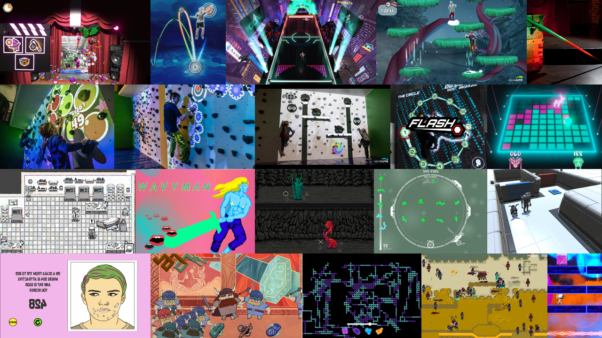

Lassi Vapaakallio
I've been making games since 2013, focusing on strange, funny and experimental games. Since Autumn 2015 I've been making games full-time, first as a student, then as a professional from 2017 onwards.
I work in Unity/C#, but with a strong background in Computer Science, I can pick up any programming language that is thrown at me.
My favourite thing is talking with team members, coming up with ideas and testing them as quickly as possible. That's why my ideal position involves both game design and programming in a collaborative small team.
